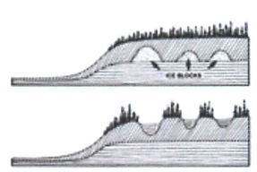

The hollow just in front of you is called a "kettle". Look around, and you will notice similar features in the area.
Over 10,000 years ago, as the glaciers slowly melted, large chunks of ice broke off and gradually became covered by glacial till released from the melting ice. With warming temperatures, these giant ice cubes eventually melted and the material covering them sank - leaving depressions in the landscape - like the one you see before you.
You won't find any water in this kettle.The soils that have developed here  are well-drained and support a forest community. However, the next time you take a drive in the countryside, observe the circular shape of many of our ponds and sloughs. Most of these originated as glacial kettles.
Take a closer look and notice how the plant communities differ, depending on which side of the kettle they are growing on. Which slopes get more sun? Which get more shade?
Just a short distance ahead is another stop - one that will challenge your ability to focus on small details.